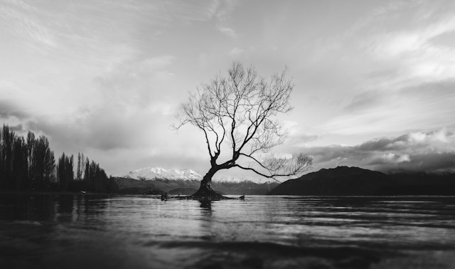
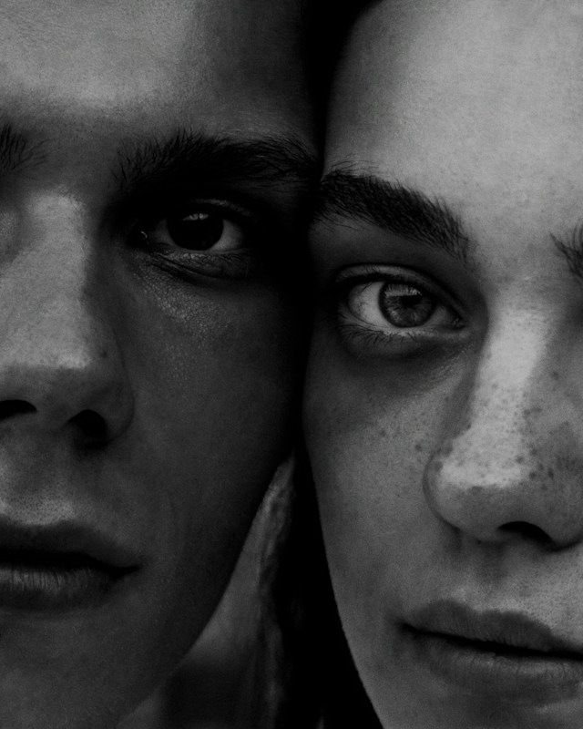

noir studio is an independent photography project exploring the world through the timeless language of black and white. by removing colour, attention shifts towards light, shadow, texture and emotion, revealing the beauty of details often overlooked.
through two complementary perspectives, nature and nurture, the project captures the relationship between the natural world and human experience. a visual exploration of contrasts, quiet moments and everyday fragments, where simplicity becomes a way of seeing.

week Nº 01 — 2026a moment of stillness, where light meets the natural world.
explore nature ↗
week Nº 02 — 2026a quiet study of human bonds, emotions and the moments that bring us together.
explore nurture ↗